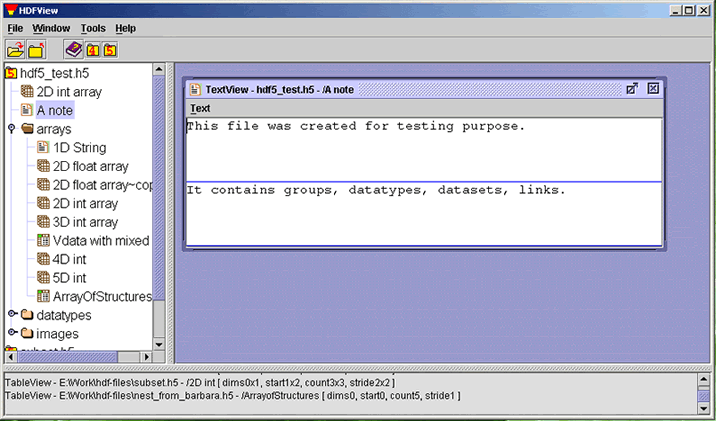

[Index] [1] [2] [3] [4] [5] [6] [7]
Datasets with data of type "String" are displayed in a Text Viewer window. The Text Viewer provides a scroller for a large string dataset. Users can scroll up or down and left or right, as needed, to view the full content of the dataset.
TextView shows the text of a one-dimension text dataset in rows of text areas. For multiple-dimension datasets, you can select one dimension to display using the "Open As" command from the TreeView. The following figure shows that two rows of 1-D text (dim[0] = 2) are displayed in separate text areas.

A Dataset with String data
You can modify the text content by typing new text in the text area. The modified text is chopped based on the maximum length of the string dataset. A string dataset of variable length is not supported.
[Index] [1] [2] [3] [4] [5] [6] [7]